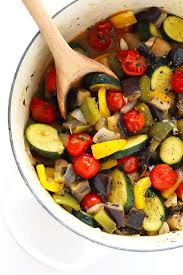
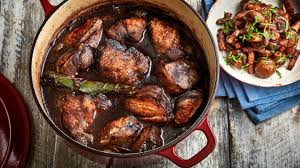
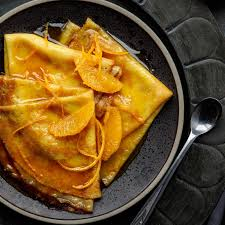
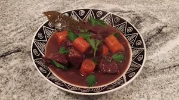

French cuisine is known for its elegance, flavors, and tradition.
Here are six of the most iconic French dishes you can explore.

Croissants
Flaky, buttery pastry enjoyed at breakfast.
See Recipe

Ratatouille
Provençal vegetable stew full of flavors.
See Recipe

Coq au Vin
Chicken braised in wine with mushrooms & onions.
See Recipe

Crêpes
Thin pancakes, can be sweet or savory.
See Recipe

Beef Bourguignon
Rich beef stew slow-cooked in red wine.
See Recipe

French Onion Soup
Caramelized onion soup topped with cheesy bread.
See Recipe